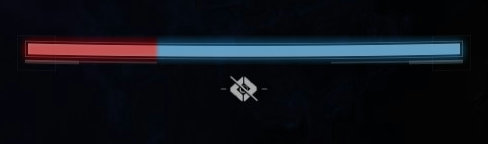

防具のステータスは、それぞれ可動性、耐久力、回復力、鍛錬、知性、腕力の6個に分かれて存在します。
ステータスはランダムに割り振られており、防具にMODを装備することでさらに伸ばすことができます。
また、サブクラスに設定できるかけらや、一部の武器パーク、武器のフレームなどによっても変動します。
ステータスが10上がるごとに効果が一段階増加します。一の位の大きさは一切関係ありません。
防具基礎ステータスの詳細について
防具の基礎ステータスである、可動性、耐久力、回復力、鍛錬、知性、腕力の6つが実際にプレイに及ぼす影響と、その効果量などを解説しています。
目次
右三角形はクリックすることで展開できます。
各説明欄の右側にある三角をクリックするとページ先頭まで戻ることができます。
ステータスの基本仕様
 可動性
可動性
可動性について
可動性は、ガーディアンの移動に関する大部分を左右するステータスです。歩行、ジャンプ高度などはこれによって変化します。さらに、ハンターの場合は可動性が高いほど回避のクールダウンも短縮されます。
可動性の詳細
左右や後ろへの移動速度は通常に比べて -15% 遅くなります。
また、ADSしながらの移動は -25% 遅くなります。ただし、ピストルでは -15% となります。
さらに、しゃがみながらの移動は -45% 遅くなります。
ジャンプの高度は可動性によって変化します。
ダッシュの速度は可動性によって変化しません。
また、ジャンプスキル（リフト、ダブルジャンプ、グライディング）は可動性によって影響を受けることはありません。
さらに、スライディングの距離に関しても影響はありません。
軽量フレームの武器や一部エキゾチック武器・防具は、ダッシュ速度を上げる効果があります。
これらの効果は重複しますが、合計で +12.5%（9 m/s）を超えて効果を得ることはありません。
また、ADSしながらの移動は -25% 遅くなります。ただし、ピストルでは -15% となります。
さらに、しゃがみながらの移動は -45% 遅くなります。
ジャンプの高度は可動性によって変化します。
ダッシュの速度は可動性によって変化しません。
また、ジャンプスキル（リフト、ダブルジャンプ、グライディング）は可動性によって影響を受けることはありません。
さらに、スライディングの距離に関しても影響はありません。
軽量フレームの武器や一部エキゾチック武器・防具は、ダッシュ速度を上げる効果があります。
これらの効果は重複しますが、合計で +12.5%（9 m/s）を超えて効果を得ることはありません。
テーブル
| 可動性 | 0 | 10 | 20 | 30 | 40 | 50 | 60 | 70 | 80 | 90 | 100 |
|---|---|---|---|---|---|---|---|---|---|---|---|
| 歩行速度 (m/s) | 5 | 5.2 | 5.4 | 5.6 | 5.8 | 6 | 6.2 | 6.4 | 6.6 | 6.8 | 7 |
| 横移動速度 (m/s) | 4.25 | 4.42 | 4.59 | 4.76 | 4.93 | 5.1 | 5.27 | 5.44 | 5.61 | 5.78 | 5.95 |
| しゃがみ移動速度 (m/s) | 2.75 | 2.86 | 2.97 | 3.08 | 3.19 | 3.3 | 3.41 | 3.52 | 3.63 | 3.74 | 3.85 |
| ダッシュ速度 (m/s) | 8 | ||||||||||
| 可動性 | 0 | 10 | 20 | 30 | 40 | 50 | 60 | 70 | 80 | 90 | 100 |
|---|---|---|---|---|---|---|---|---|---|---|---|
| 勝負師の回避 (秒) | 54 | 47 | 42 | 38 | 36 | 31 | 29 | 27 | 23 | 21 | 19 |
| 狙撃手の回避 (秒) | 41 | 36 | 32 | 29 | 26 | 24 | 22 | 20 | 18 | 16 | 14 |
| 曲芸師の回避 (秒) | 117 | 102 | 91 | 82 | 74 | 67 | 63 | 59 | 51 | 46 | 41 |
| 基本クールダウンとの差 | +43% | +26% | +11% | 0% | -9% | -17% | -23% | -28% | -38% | -44% | -50% |
 耐久力
耐久力
耐久力について
耐久力は、自身のHPのシールド量や、受けるひるみの軽減量、戦闘員から受けるダメージの軽減量などに影響します。さらに、タイタンの場合は耐久力が高いほどバリケードのクールダウンも短縮されます。
耐久力の詳細

上の画像はHPバーを色分けしたものです。赤い部分はガーディアン自身のHP、青い部分はシールドのHPとなっています。耐久力はシールドのHPを増加させる効果があります。
また、ダメージを軽減する効果はPvEでのみ発動します。
上の画像はHPバーを色分けしたものです。赤い部分はガーディアン自身のHP、青い部分はシールドのHPとなっています。耐久力はシールドのHPを増加させる効果があります。
また、ダメージを軽減する効果はPvEでのみ発動します。
テーブル
| 耐久力 | 0 | 10 | 20 | 30 | 40 | 50 | 60 | 70 | 80 | 90 | 100 |
|---|---|---|---|---|---|---|---|---|---|---|---|
| シールドHP | 115.01 | 116.01 | 117.01 | 118.01 | 119.01 | 120.01 | 122.01 | 124.01 | 126.01 | 128.01 | 130 |
| 本体HP | 70 | ||||||||||
| 合計HP | 185.01 | 186.01 | 187.01 | 188.01 | 189.01 | 190.01 | 192.01 | 194.01 | 196.01 | 198.01 | 200 |
| ひるみ軽減量 | 0% | -1% | -2% | -3% | -4% | -5% | -6% | -7% | -8% | -9% | -10% |
| ダメージ軽減量 | 0% | -1% | -2% | -3% | -4% | -8% | -14% | -20% | -26% | -32% | -40% |
| 耐久力 | 0 | 10 | 20 | 30 | 40 | 50 | 60 | 70 | 80 | 90 | 100 |
|---|---|---|---|---|---|---|---|---|---|---|---|
| 頑強なバリケード (秒) | 57 | 50 | 44 | 40 | 36 | 33 | 30 | 28 | 24 | 22 | 20 |
| 反撃のバリケード (秒) | 45 | 40 | 35 | 32 | 29 | 26 | 24 | 23 | 19 | 17 | 16 |
| バスティオン (秒) | 117 | 102 | 91 | 82 | 74 | 67 | 63 | 59 | 51 | 46 | 41 |
| スラスター (秒) | 43 | 38 | 34 | 30 | 28 | 25 | 22 | 20 | 17 | 14 | 12 |
| 基本クールダウンとの差 | +43% | +26% | +11% | 0% | -9% | -17% | -23% | -28% | -38% | -44% | -50% |
 回復力
回復力
回復力について
回復力は、ダメージを受けてからどれだけ早く回復できるかを決定するステータスです。さらに、ウォーロックの場合は回復力が高いほどリフトのクールダウンも短縮されます。
回復力の詳細
上の画像はHPバーを色分けしたものです。赤い部分はガーディアン自身のHP、青い部分はシールドのHPとなっています。
回復のプロセスは、「回復が開始するまでの遅延」と「全回復までの時間」の2つに分けられます。HPとシールドにそれぞれ存在します。
回復が開始するまでの遅延は、ダメージを受けた瞬間から回復が開始するまでの秒数です。1.35 以上のダメージを受けるたびにタイマーがリセットされます。回復力を増加させるとこれが短縮され、回復が早く始まるようになります。
全回復までの時間は、実際にHPやシールドの回復が始まってから、全回復するまでの時間です。回復力を増加させるとこの時間も早くなります。
HPとシールドの回復は同じタイマーではないため、これらを同時に回復させることも可能です。
テーブル
| 回復力 | 0 | 10 | 20 | 30 | 40 | 50 | 60 | 70 | 80 | 90 | 100 |
|---|---|---|---|---|---|---|---|---|---|---|---|
| HP回復遅延 (秒) | 3.25 | 3.15 | 3.05 | 2.95 | 2.85 | 2.75 | 2.65 | 2.45 | 2.25 | 2.05 | 1.75 |
| シールド回復遅延 (秒) | 5.5 | 5.4 | 5.3 | 5.2 | 5.1 | 5 | 4.9 | 4.7 | 4.5 | 4.3 | 4 |
| HP全回復時間 (秒) | 3.45 | 3.35 | 3.25 | 3.15 | 3.05 | 2.95 | 2.85 | 2.65 | 2.45 | 2.25 | 2 |
| シールド全回復時間 (秒) | 3.5 | 3.4 | 3.3 | 3.2 | 3.1 | 3 | 2.9 | 2.7 | 2.5 | 2.3 | 2 |
| HP+シールド全回復時間 (秒) | 5.75 | 5.65 | 5.55 | 5.45 | 5.35 | 5.25 | 5.15 | 4.95 | 4.75 | 4.55 | 4.25 |
| トータル全回復時間 (秒) | 9 | 8.8 | 8.6 | 8.4 | 8.2 | 8 | 7.8 | 7.4 | 7 | 6.6 | 6 |
| 回復力 | 0 | 10 | 20 | 30 | 40 | 50 | 60 | 70 | 80 | 90 | 100 |
|---|---|---|---|---|---|---|---|---|---|---|---|
| 回復のリフト (秒) | 117 | 102 | 91 | 82 | 74 | 67 | 63 | 59 | 51 | 46 | 41 |
| 強化のリフト (秒) | 117 | 102 | 91 | 82 | 74 | 67 | 63 | 59 | 51 | 46 | 41 |
| フェニックスダイブ (秒) | 117 | 102 | 91 | 82 | 74 | 67 | 63 | 59 | 51 | 46 | 41 |
| 基本クールダウンとの差 | +43% | +26% | +11% | 0% | -9% | -17% | -23% | -28% | -38% | -44% | -50% |
 鍛錬
鍛錬
鍛錬について
鍛錬は、グレネードのクールダウン時間を短縮するステータスです。短縮量はグレネードの種類によって異なりますが、短縮される割合はどのグレネードでも同じです。
テーブル
| 鍛錬 | 0 | 10 | 20 | 30 | 40 | 50 | 60 | 70 | 80 | 90 | 100 |
|---|---|---|---|---|---|---|---|---|---|---|---|
| 基本クールダウンとの差 | +25% | +14% | +4% | 0% | -17% | -28% | -38% | -45% | -50% | -55% | -60% |
| 一つ前のレベルとの差 | - | -9% | -8% | -4% | -17% | -14% | -13% | -11% | -10% | -9% | -15% |
| 基本とのチャージ速度の差 | -20% | -12% | -4% | 0% | +20% | +40% | +60% | +80% | +100% | +120% | +160% |
 知性
知性
知性について
知性は、スーパースキルのクールダウン時間を短縮するステータスです。通常はこのクールダウンに加え、敵にダメージを与えたりキルをすることでスーパースキルエネルギーが回復する効果を受けます。短縮量はスーパースキルの種類によって異なりますが、短縮される割合はどのスーパースキルでも同じです。
テーブル
| 鍛錬 | 0 | 10 | 20 | 30 | 40 | 50 | 60 | 70 | 80 | 90 | 100 |
|---|---|---|---|---|---|---|---|---|---|---|---|
| 基本クールダウンとの差 | +31% | +21% | +13% | 0% | -6% | -11% | -16% | -22% | -25% | -29% | -30% |
| 一つ前のレベルとの差 | - | -12% | -10% | -13% | -6% | -5% | -5% | -5% | -3% | -3% | -1% |
 腕力
腕力
腕力について
腕力は、近接スキルのクールダウン時間を短縮するステータスです。短縮量は近接スキルの種類によって異なりますが、短縮される割合はどの近接スキルでも同じです。
テーブル
| 腕力 | 0 | 10 | 20 | 30 | 40 | 50 | 60 | 70 | 80 | 90 | 100 |
|---|---|---|---|---|---|---|---|---|---|---|---|
| 基本クールダウンとの差 | +25% | +14% | +4% | 0% | -17% | -28% | -38% | -45% | -50% | -55% | -60% |
| 一つ前のレベルとの差 | - | -9% | -8% | -4% | -17% | -14% | -13% | -11% | -10% | -9% | -15% |
| 基本とのチャージ速度の差 | -20% | -12% | -4% | 0% | +20% | +40% | +60% | +80% | +100% | +120% | +160% |
出典
The Destiny Data CompendiumBreakdown of Mobility: Ultimate Edition
更新履歴
過去のページを確認するコメントを読み込んでいます...